Sintético.
Equivalentes al clásico papel de pared, los pavimentos y revestimientos sintéticos, en papel de vinilo o fibra de vidrio (que también puede usarse para suelos), son materiales muy resistentes a la humedad y pueden usarse en el exterior, ya que hoy en día existen modelos que no se dañan por la exposición a los rayos uva.
Nuestra amplia oferta en gráficas te permitirá decorar todo tipos de espacios, desde la habitación de niños, con sus dibujos animados favoritos, hasta un comedor con ornamentaciones barrocas.
Podemos incluso personalizarlos para grandes superficies (amplios metrajes) e incluso crearlos a partir de fotografías que ayudarán a singularizar cualquier imagen corporativa.
Estos materiales suelen usarse generalmente en espacios domésticos, todo y que es cada vez más frecuente encontrarlos en hoteles y hostales.
Marcas en el showroom
- Granorte
- Panelpiedra
- Wonderwall
- WLL Deco
- Inkiostro
- Greenarea
Y si lo que buscas no está en exposición, lo buscamos en la Bagnoteca.
Novedades 202627
 Sintético
Sintético¿Por qué la mayoría de los suelos de corcho buscan un acabado perfecto y uniforme?
Cuanto más liso y homogéneo, menos se nota que es un material natural. Se pierde el carácter.
Granorte lo resuelve distinto en Vintage, la última incorporación a su colección de suelos de corcho: una paleta que nace del propio corcho, con tonos cálidos y variaciones naturales que dan profundidad real a la superficie.
Pensada para espacios de uso diario, cómoda de vivir y capaz de integrarse en distintos ambientes sin perder personalidad.
 Sintético
SintéticoCorcho natural en la pared con patrón y textura. La pared deja de ser un fondo
La mayoría de los revestimientos decoran. Pocos construyen el espacio. La diferencia está en si el material tiene presencia propia o simplemente cubre.
Storywall de Granorte acaba de entrar en nuestro catálogo de novedades.
Corcho 100% reciclado trabajado con impresión digital directamente sobre el material. Diez patrones distintos que introducen ritmo y narrativa sin perder ninguna de las ventajas del corcho: ligereza, calidez, aislamiento acústico y fácil mantenimiento.
 Sintético
SintéticoPavimentos de corcho - Granorte
En muchas viviendas y espacios de uso intensivo, la sensación de frío al caminar descalzo no depende tanto de la temperatura ambiente como del comportamiento del material bajo los pies.
Gracias a su estructura natural, el corcho reduce el choque térmico al contacto y proporciona una pisada más confortable y estable durante todo el año.
Su composición aporta además ligereza, elasticidad y un elevado aislamiento acústico y térmico, ayudando a mejorar el confort general de la estancia.
Resistente al desgaste, impermeable y de fácil mantenimiento, es una solución especialmente interesante para proyectos donde se busca combinar bienestar, durabilidad y prestaciones técnicas.
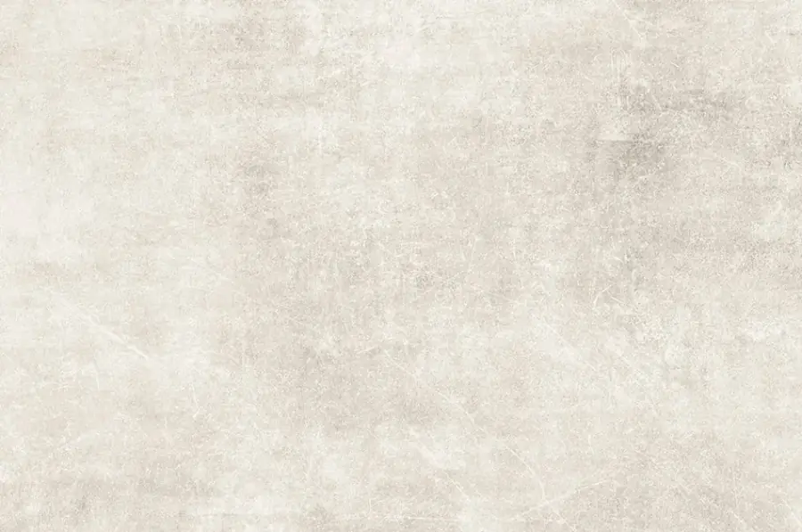
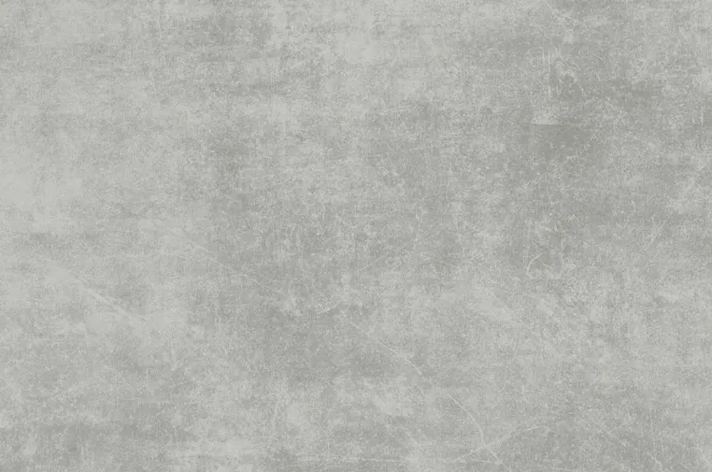
SintéticoSuelos de corcho con estética hormigón, Vita Classic – Granorte
Granorte lanza al mercado su nueva colección de suelos para viviendas y áreas comerciales que buscan un punto de sofisticación sin renunciar a la funcionalidad.
“Vita Classic” da nombre a esta reciente serie de diseños en corcho que imita la apariencia del hormigón. Con una paleta de colores disponible que va desde los tonos más cálidos hasta los grises más fríos, esta colección es perfecta para quienes buscan un aspecto industrial con un material de lo más sostenible y duradero.
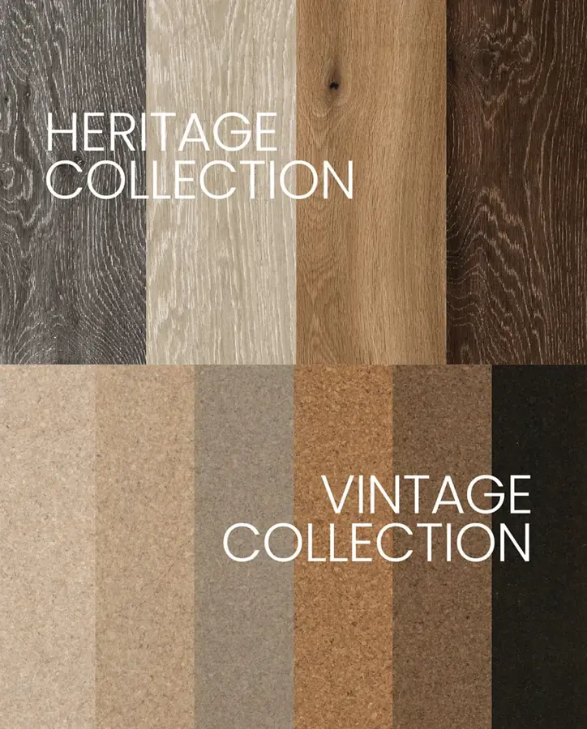
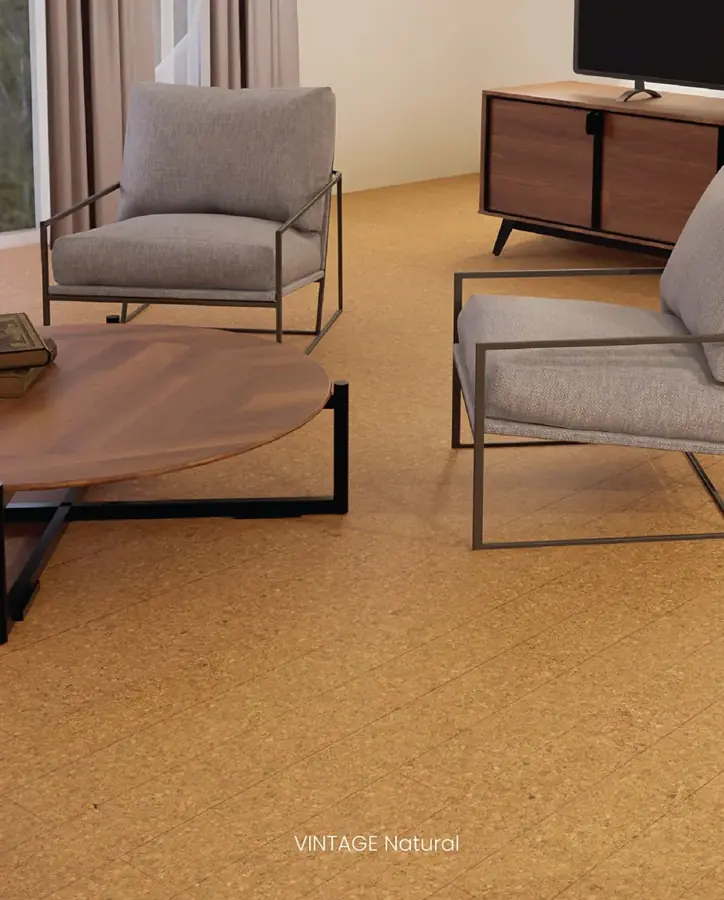
SintéticoPavimentos renovables de corcho. Heritage y Vintage - Granorte
Granorte presenta los nuevos pavimentos de corcho para suelos en formato lama (900×150 mm) disponibles en 4 y 6 mm de grosor.
Fabricados a partir de materiales renovables, resistentes al agua y de bajo mantenimiento.
Ideales para interiorismo residencial o contract que busca confort térmico y acústico con estética natural. La geometría de sus lamas aporta continuidad visual y amplitud espacial.
Disponibles en dos gamas: Heritage, con acabados cálidos tipo madera, y Vintage, con matices terrosos y textura natural.
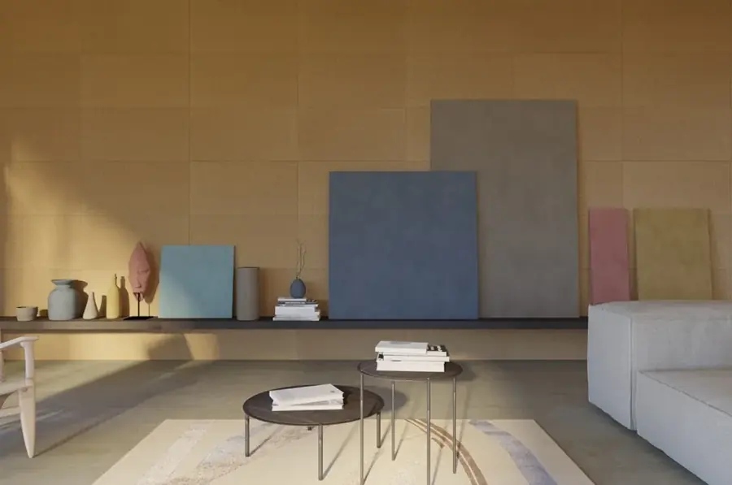
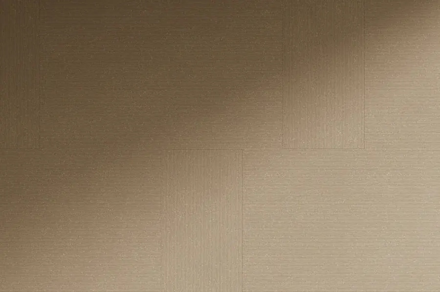
SintéticoBaldosas de corcho Tatami - Granorte
Tatami es la síntesis perfecta entre diseño, sostenibilidad y confort. Con grandes referencias a la tradición japonesa, este revestimiento en relieve transforma las paredes en auténticas piezas de diseño. Toda una expresión de diseño consciente, donde el material y la estética se encuentran en equilibrio.
Fabricada con corcho reciclado 100 % postindustrial, la colección combina ligereza y durabilidad en un formato de baldosa elegante que imita el bambú. Sus tres tonalidades—Natural, Light y Midnight—aportan profundidad y armonía visual al espacio.
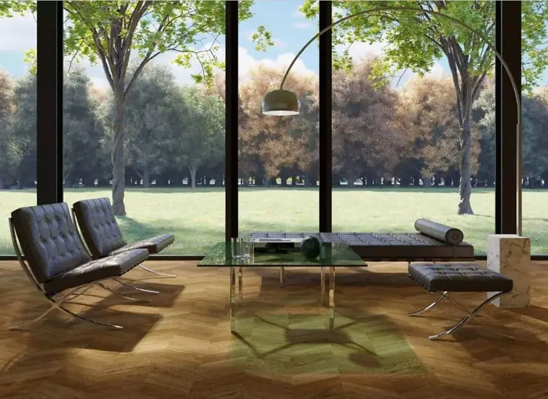
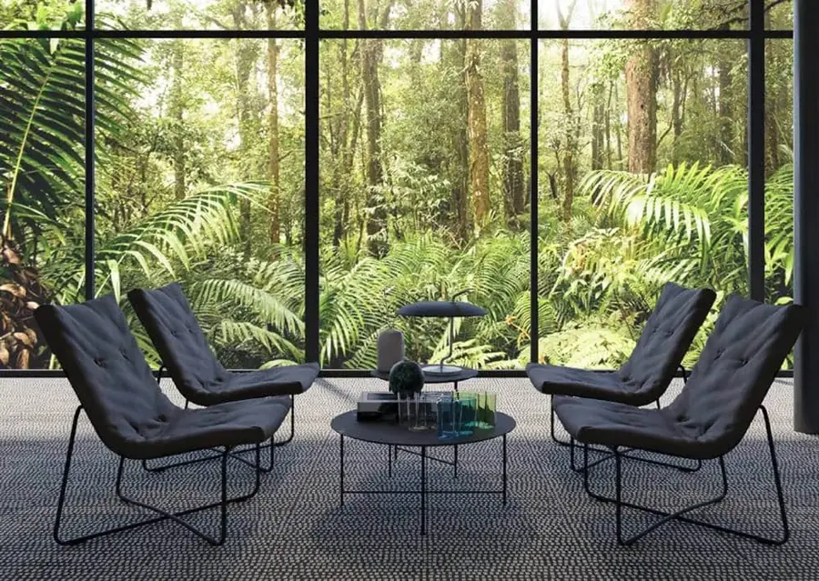
SintéticoSuelos de corcho con estética hormigón, Vita Classic – Granorte
Granorte lanza al mercado su nueva colección de suelos para viviendas y áreas comerciales que buscan un punto de sofisticación sin renunciar a la funcionalidad.
“Vita Classic” da nombre a esta reciente serie de diseños en corcho que imita la apariencia del hormigón. Con una paleta de colores disponible que va desde los tonos más cálidos hasta los grises más fríos, esta colección es perfecta para quienes buscan un aspecto industrial con un material de lo más sostenible y duradero.
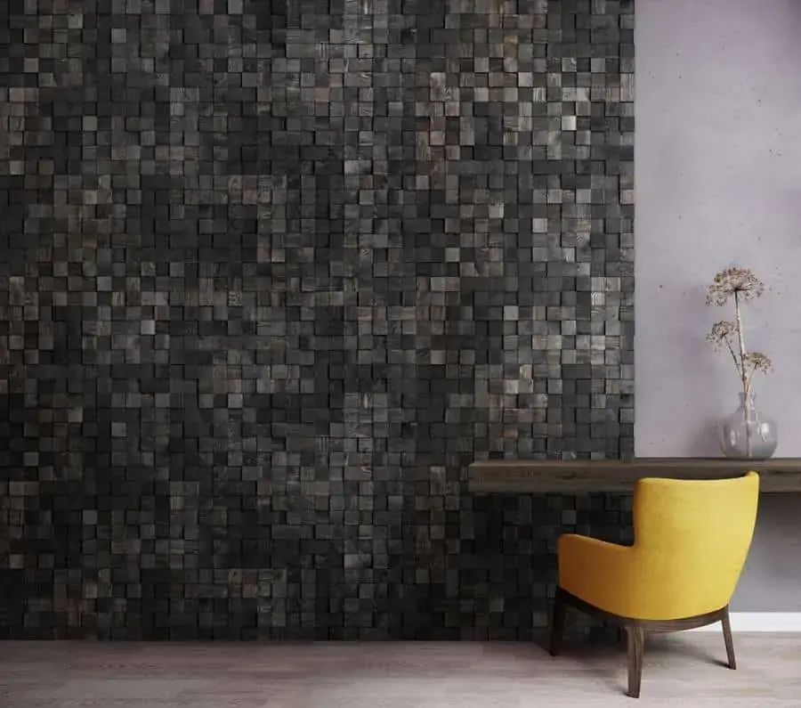
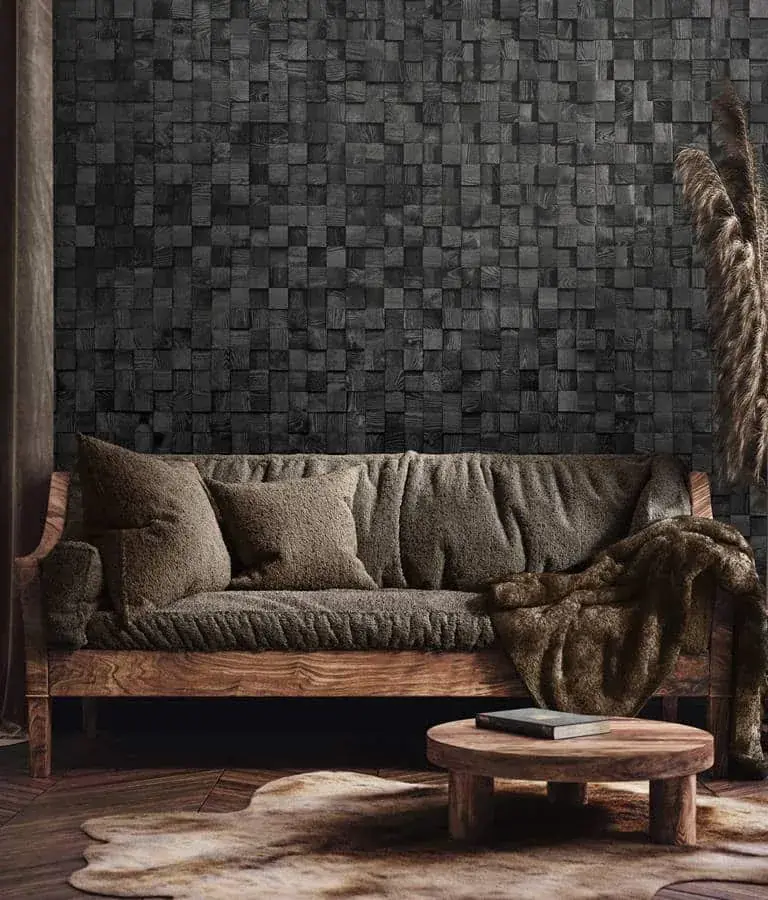
SintéticoPaneles de madera para revestir paredes Pino Carbon – Stegu
Stegu sorprende con su nueva colección disponible para el revestimiento de paredes “Pino Carbon”, de la serie Wood Collection.
Paneles de grandes dimensiones (380x380x12-20mm) hechos a partir de cuadrados de madera natural y pensados al milímetro, consiguiendo un diseño exclusivo. Las piezas de madera están colocadas estratégicamente a diferentes alturas para crear un mosaico único e irrepetible.
La colección está disponible en dos tonalidades: “Pino Carbon monocromático”, con acabado en negro, y “Pino Carbon Ombre”, con destellos marrones.
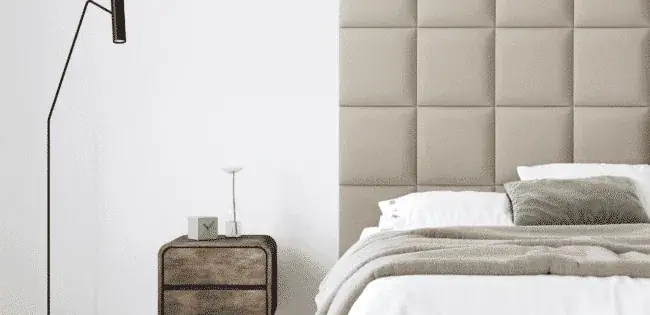
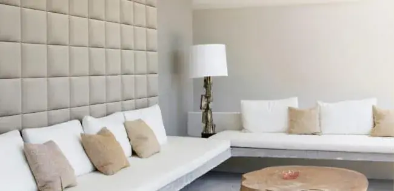
SintéticoTapiceria para revestir paredes Mollis Collection - Stegu
Segu incluye dentro de su catálogo la colección de tapicería para paredes Mollis, funcional como respaldo y también, para decorar cualquier estancia: habitaciones infantiles, dormitorios, salas de estar, pasillos, etc.
Lejos de quedarse en un pequeño muestrario, Mollis Collection ofrece infinidad de tejidos y acabados: texturas aterciopeladas, colores atemporales y estacionales, estampados y patrones, con trama visible, etc. Multitud de opciones combinables entre ellas.
Destacar entre sus propiedades su revestimiento hidrofóbico que permite un buen mantenimiento contra el agua y la humedad, su capacidad como aislante térmico y de sonido, y la facilidad de montaje.
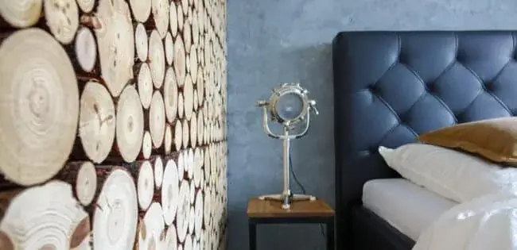
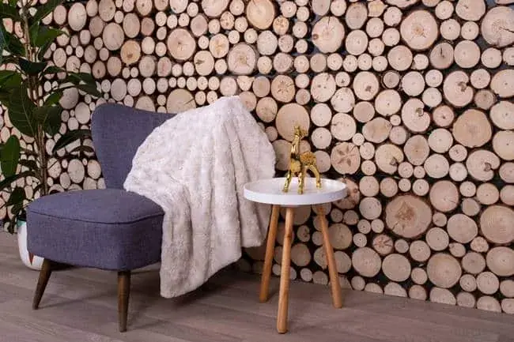
SintéticoPaneles de madera para revestir paredes Pure – Stegu
Stegu se baña en tintes nórdicos para presentar su última novedad en revestimiento de paredes, la colección Pure hecha con madera natural.
El protagonismo de este material en la pieza te transporta hacia las típicas casas escandinavas, ofreciendo un toque cálido a los tonos fríos que suelen usarse.
Aunque sus líneas son minimalistas, el panel podría funcionar como parte de la decoración. Sus dimensiones (760x380x33mm) y su forma permiten usarlo en su totalidad o dividirlo en partes más pequeñas: en puertas correderas, paredes, como separador, etc.
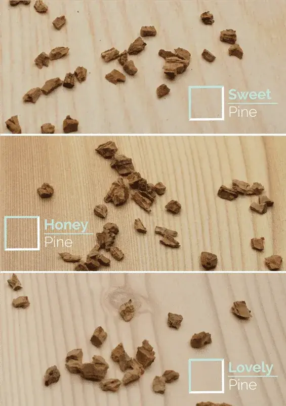
SintéticoPavimentos Naturales Homestories Collection - Granorte
Fácil de limpiar, alta resistencia, aislamiento térmico y acústico. Una impresionante colección de suelos en tres tonos: Sweet Pine, Honey Pine, Lovely Pine. Suelo único de origen natural, disponible en Listor.
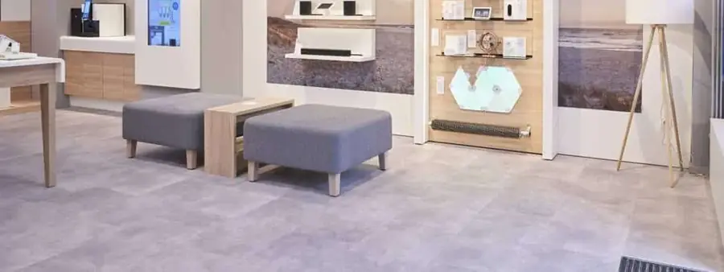
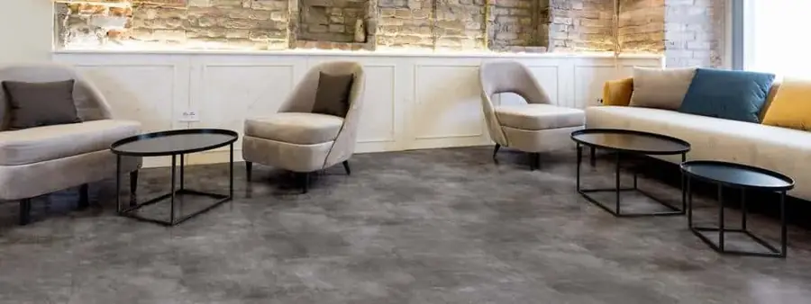
SintéticoPavimentos sostenibles (ecológicos) Mineral – Floover
Un nuevo proceso que pretende dar una segunda vida a tus pavimentos desgastados o modificar los diseños de los antiguos. Solo tienes que enviar el suelo a Floover y ellos se encargan de restaurarlo.
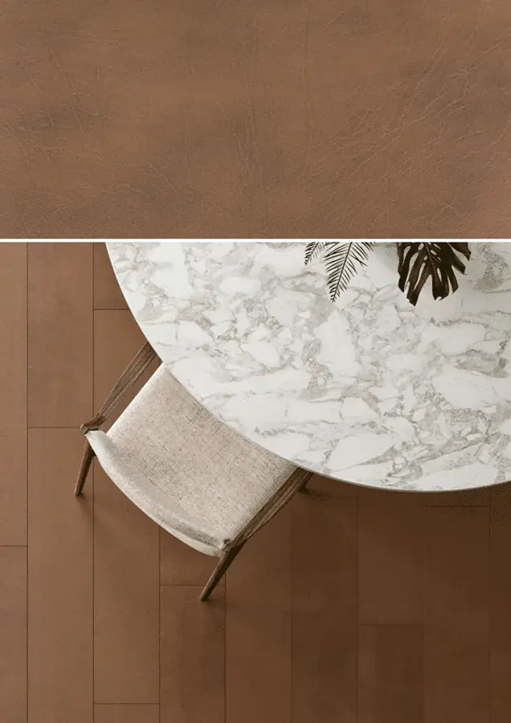
SintéticoPavimentos de corcho reciclado Corium – Granorte
Corium es 100% corcho reciclado y cuero, consiguiendo un acabado de lujo. Una propuesta de Granorte que dota a los espacios de un agradable confort natural y se ofrece en una gama de estéticas en imitación de cocodrilo de Veneto, Umbría granulada y Lombardía.
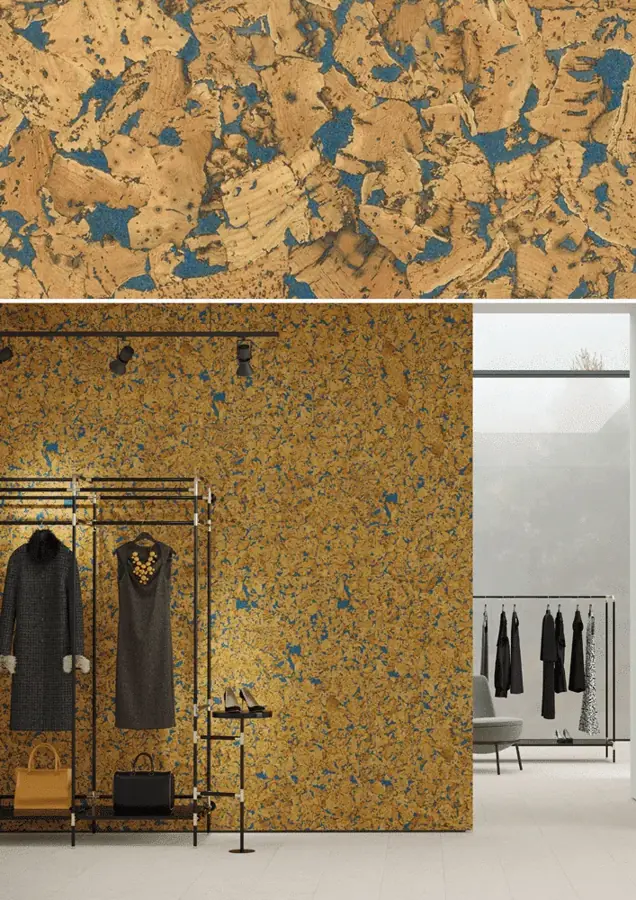
SintéticoRevestimientos de corcho WallTrend – Granorte
Granorte vuelve a sorprender con una de sus colecciones de pared de corcho, esta vez con 16 opciones ideadas para transformar los espacios en lugares maravillosos donde realmente apetece estar.
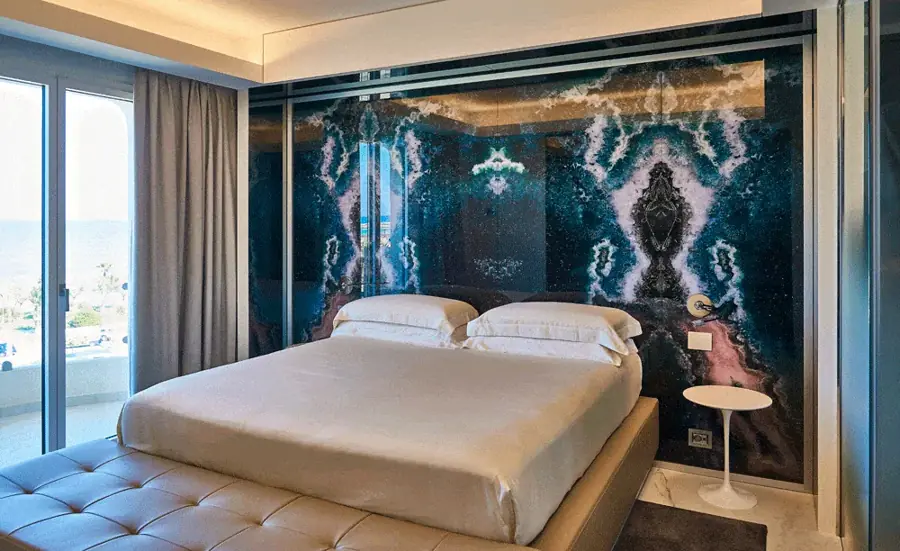
SintéticoRevestimiento de láminas de vidrio Vetrite - Sicis
Los revestimientos de láminas de vidrio Vetrite de Sicis son la mezcla perfecta entre los procesos de producción modernos, precisos y óptimos, con los tradicionales, que aportan la elegancia de lo artesanal y/o imperfecto.
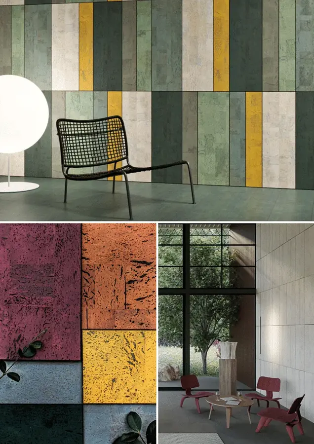
SintéticoPavimentos y revestimientos naturales Carioca – Granorte
Marco Carini ha ideado esta colección de pavimentos y revestimientos naturales con el objetivo de acercar el color a los espacios. Carioca es una propuesta de Granorte, que se centra en quince colores estridentes, con gráficas de diseño top.
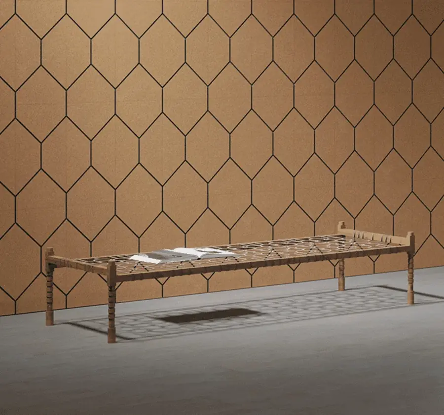
SintéticoPavimentos y revestimientos naturales Groovy – Granorte
Elaborado en su totalidad con corcho post industrial al 100 % reciclado. De estilo vintage, con un punto muy actual, Groovy es una propuesta de pavimentos y revestimientos cerámicos con mucho, mucho, carisma.
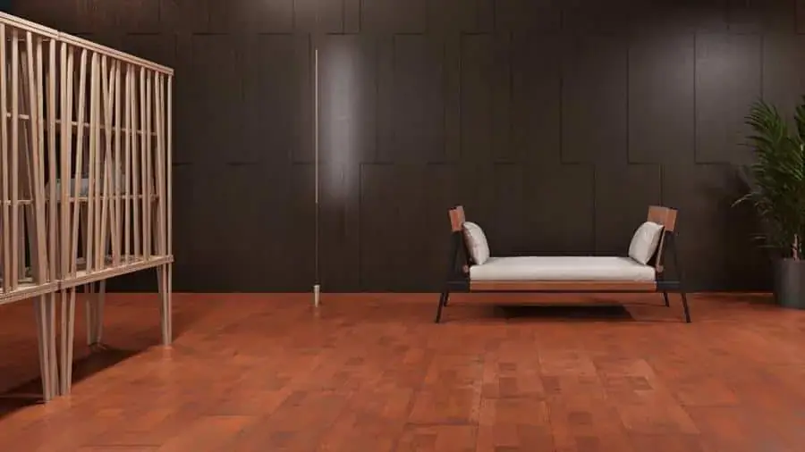
SintéticoPavimentos y revestimientos naturales Bebop – Granorte
Un revestimiento de pared de grano de corcho en tres dimensiones, consiste en un mosaico de patrones geométricos, naturales, 100% sostenibles, en completa sintonía con los nuevos tiempos. Con BEBOP, Granote propone una colección original y versátil.
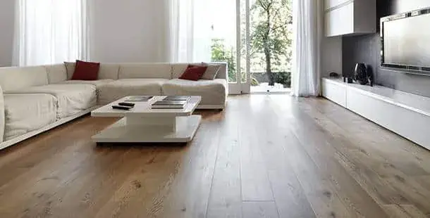
SintéticoPavimentos y revestimientos naturales Vita Classics – Granorte
Suelos de corcho estampado diseñados con el objetivo de crear texturas singulares, muy reconocibles en la naturaleza. Una propuesta de alta durabilidad, totalmente ecológica, para espacios acordes con los valores sostenibles.
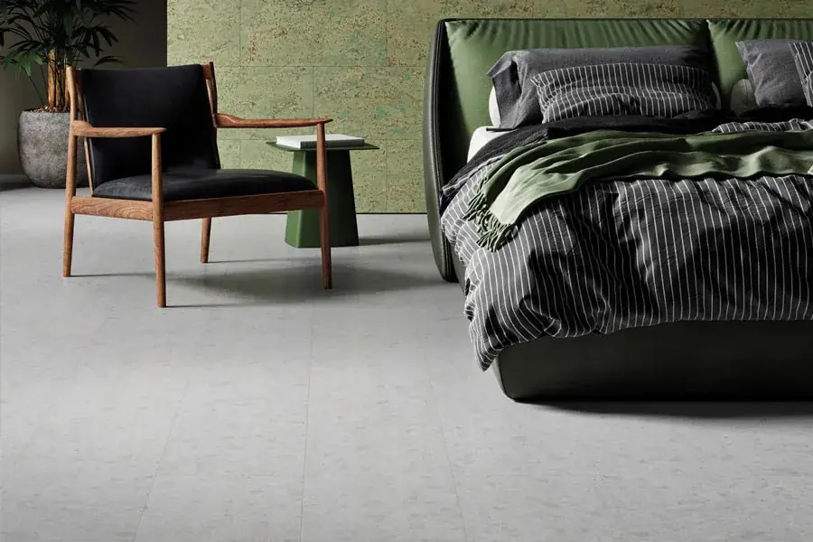
SintéticoPavimentos y revestimientos de corcho Naturals – Granorte
Suelo flotante de una belleza y estilo sin igual. Un universo de colores diseños y texturas naturales para crear ambientes de estilo lujoso, en todo tipo de espacios, ya sean de aspecto clásico, moderno o de cualquier otra índole.
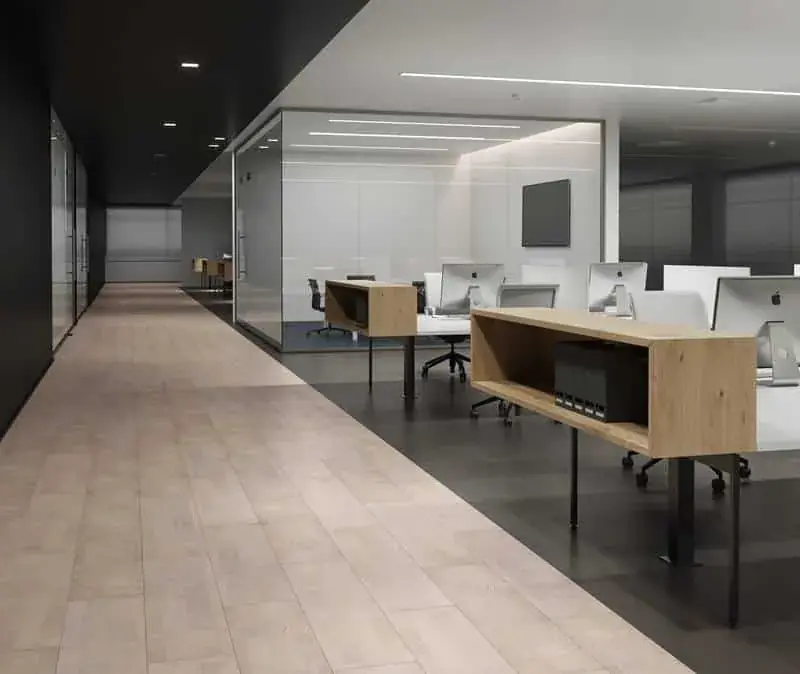
SintéticoColeccion de pavimentos y revestimientos de corcho Recolour – Granorte
La colección Recolour de Granote posee la apariencia estética del corcho, material natural. Baldosas enconadas y tablones de instalación acabados en Wearplus, muy fáciles de limpiar y altamente resistentes al desgaste.
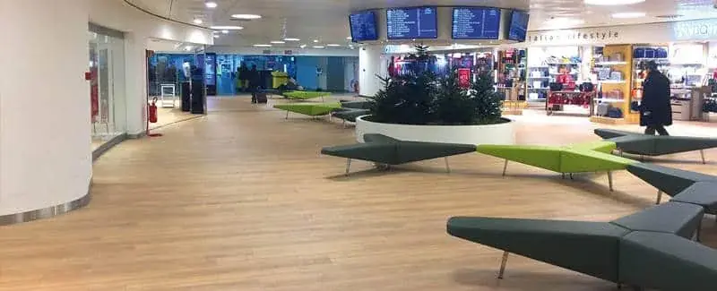
SintéticoPavimentos y revestimientos sintéticos Mineral Collection - Floover
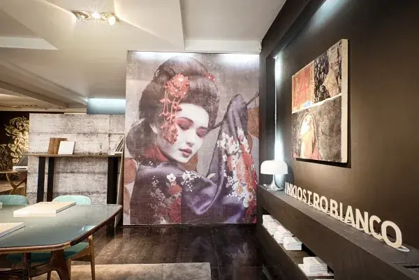
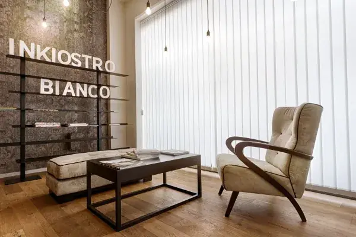
SintéticoPapel en vinilo para paredes y suelos – Inkiostro Bianco
Óptimo para suelos, paredes, techos e incluso para muebles, el papel el vinilo de EQ – Dekor de Inkiostro Bianco, una reinterpretación del clásico papel de pared, es ideal para transformar cualquier espacio incorporándole diseños de artistas y también personalizados.
La calidad del material de fabricación, fruto del avanzado desarrollo tecnológico que ofrece esta firma en todos sus productos, junto a sus más de 400 opciones gráficas de la más alta resolución, convierten esta novedad en una opción ideal para incorporar en cuartos de baño o cocinas, por ejemplo, en los que se pretenda crear atmósferas contemporáneas adaptadas a estéticas de lo más particulares.
Una perfecta opción si lo que buscas es provocar emociones a partir de la contemplación del espacio.
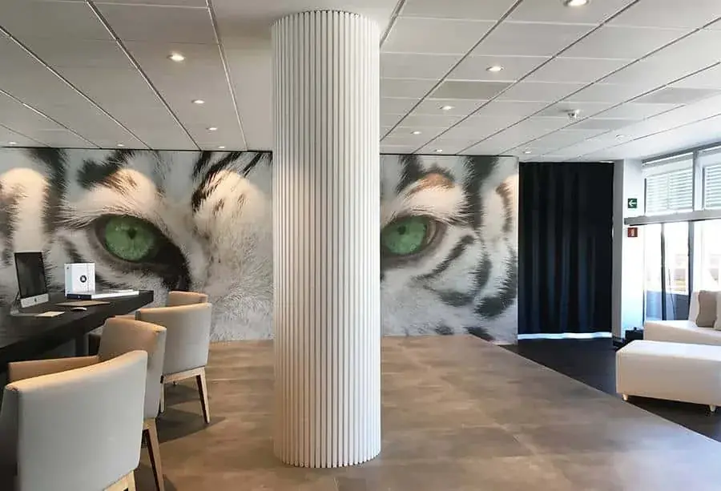
SintéticoRevestimientos sintéticos Wallcovering - Floover
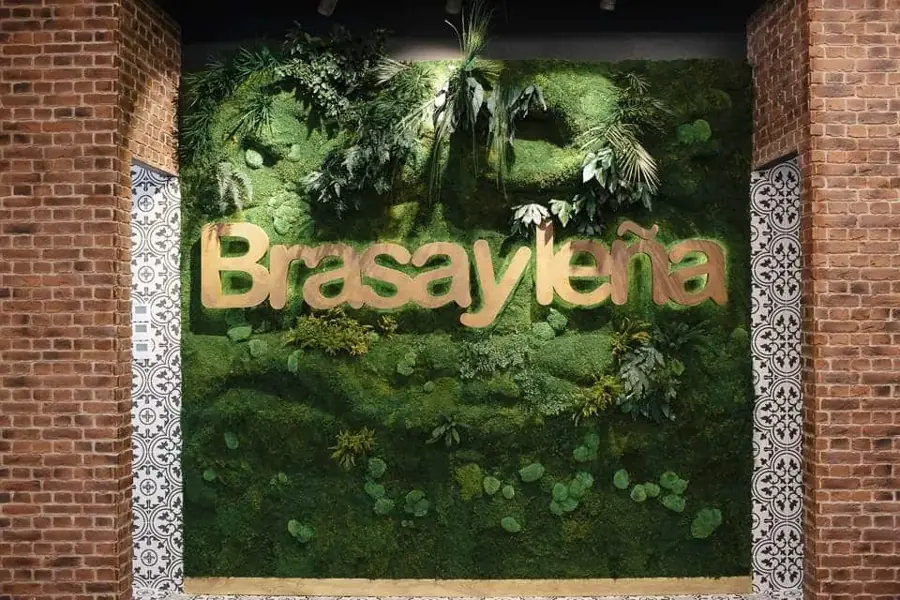
SintéticoPavimentos y revestimientos para decoración vegetal- GreenArea
La empresa española Green Area presenta un innovador concepto en el mundo de los pavimentos-revestimientos decorativos. Se trata de un nuevo producto en el sector, cuyo objetivo no es otro que incorporar decoración vegetal artificial en el paisaje urbano.
Se trata de jardines verticales personalizables, realizados artesanalmente utilizando musgos, líquenes y plantas estabilizadas naturales con gran diversidad de colores y formas, capaces de aportarle vida al espacio donde se colocan; junto con troncos y lianas naturales, con los que puedes diferenciar cualquier decoración en la que los incorpores.
Un nuevo concepto cuya gran versatilidad, no sólo aporta un toque diferencial a una decoración, sino que además facilita su combinación con cualquier tonalidad de color, textura o estampado.
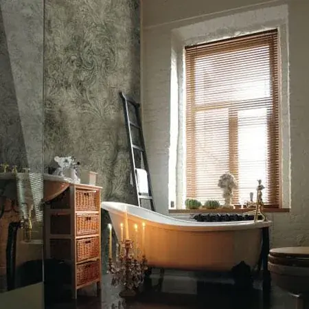
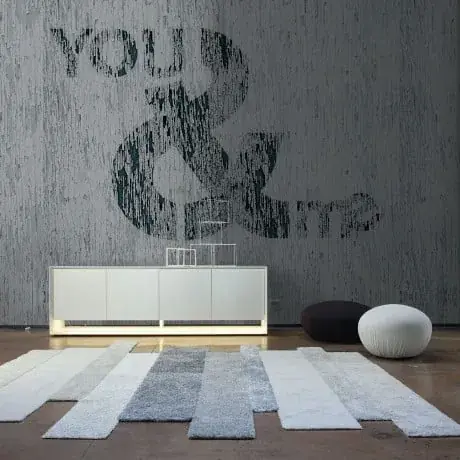
SintéticoParedes y pavimentos sintéticos - Inkiostro Bianco
“Soluciones decorativas de autor para revestir paredes y pavimentos de forma artística y personalizada”
Inkiostro Bianco, está especializada en diseños y decorados de autor, y Mapei, es líder mundial en la fabricación de colas y adhesivos. De la colaboración de ambas nace este revolucionario sistema para revestir suelos y paredes.
No absorbe olores, es lavable con agua y jabón neutro, ignífugo, fácil de colocar y quitar. Lo puedes aplicar directamente sobre el azulejo sin necesidad de arrancarlo, y así tu Cliente podrá visualizar el resultado antes de colocarse. Tambien puedes aplicarlo en zonas de agua como platos ducha, duchas, y piscinas
Una gama de decorados pensados para cualquier estancia de una vivienda.
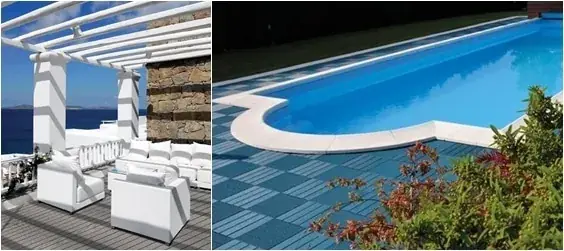
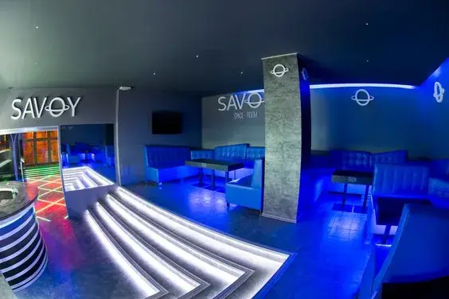
SintéticoPavimentos vinílicos flotantes - Floover
Floover, una empresa Suiza creada en 2005, destaca por su producto sostenible e innovador en el mundo de los pavimentos vinílicos. Utilizando para ello la última y más innovadora tecnología, Floover te presenta una completa colección de pavimentos vinílicos flotantes (algunos con aplicaciones decorativas también en paredes y mobiliarios), que destacan por su alta resistencia.Hablamos de una amplia gama, con una gran número de opciones en cuanto a modelos se refiere, válidas para ser incorporadas en tiendas, tiendas, restaurantes, centros deportivos, oficinas, stands, discotecas, aeropuertos, residencias y viviendas, incluso en estancias húmedas como cocinas o lavabos.